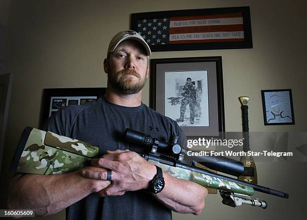

francotirador Christopher Kyle, más conocido como Chris Kyle. Nacido el 8 de abril de 1974 en Odessa, municipio tejano donde pasó su infancia entre animales y armas en la granja familiar, siempre estuvo ligado a su estado natal, Texas
Pese a eso, en el año 1999 decidió alistarse en la Armada de los Estados Unidos, donde continuó hasta su retirada del cuerpo de élite de los SEAL en 2009 para intentar salvar su matrimonio. Su esposa, Taya Studebaker-Kyle le dio un ultimátum tras su expedición a Irak. Fue la última.